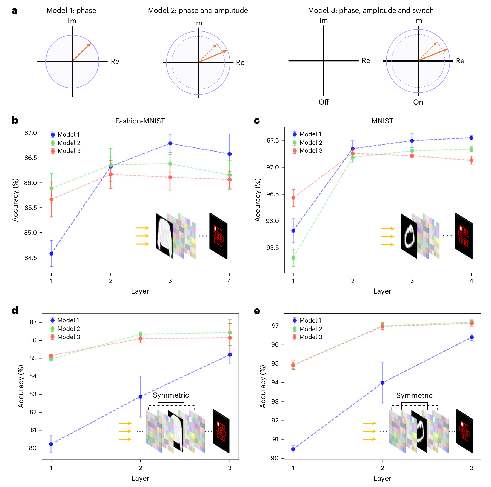

FIG. 2
幅度与关闭状态为何有用？看单层收益，也看深层代价
图 2 用 MNIST 和 Fashion-MNIST 做数值消融，先证明设计策略的作用，再用于指纹。所有曲线都是仿真网络，不是 40 kHz 实物精度。

图 2 用 MNIST 和 Fashion-MNIST 做数值消融，先证明设计策略的作用，再用于指纹。所有曲线都是仿真网络，不是 40 kHz 实物精度。 来源：原论文 Fig. 2；图体以 4 倍分辨率渲染，图下注释已在右侧中文解释。03 · 图 2 / 数值消融
为什么从三个模型中选择单层 M3？
MNIST（数字）和 Fashion-MNIST（衣物）是两套分类数据集；普通 DNN 与 loop-DNN 是传播结构；M1、M2、M3 是单元参数约束不同、分别训练的模型。每条曲线的不同层数也对应分别训练的网络，并非一个训练好的器件临时加层。
| 单层 loop-DNN 任务 | M1：相位 | M2：幅相 | M3：幅相＋关闭 |
|---|
| 衣物分类（图 2d） | 80.22% | 84.96% | 85.14% |
| 数字分类（图 2e） | 90.48% | 94.89% | 94.91% |
直接支持：单层 loop 结构中，幅度控制带来约 4–5 个百分点提升。M3 对 M2 在衣物任务上仅再提高 0.18 个百分点；数字任务只提高 0.02 个百分点，差异不显著。每个条件 n=5 指独立训练次数，不是受试者人数。
设计选择：作者希望简化为单层器件，因而采用单层结果较好的 M3。M2 将负幅度转成正幅度并把相位加 π；M3 则将负参数截为零，对应可制造的封闭单元。显式零值与优化方式是关键区别，不能将其理解为运行中的动态开关。
尚未证明：M3 在指纹任务中必然优于 M2，或 loop 普遍优于普通结构。图 2b、c 加深后 M1 可表现最好，图 2d、e 加深后 M2 可略优于 M3。准确率趋势支持条件性的设计选择，不支持“三参数永远最优”。回看图 2 ↑